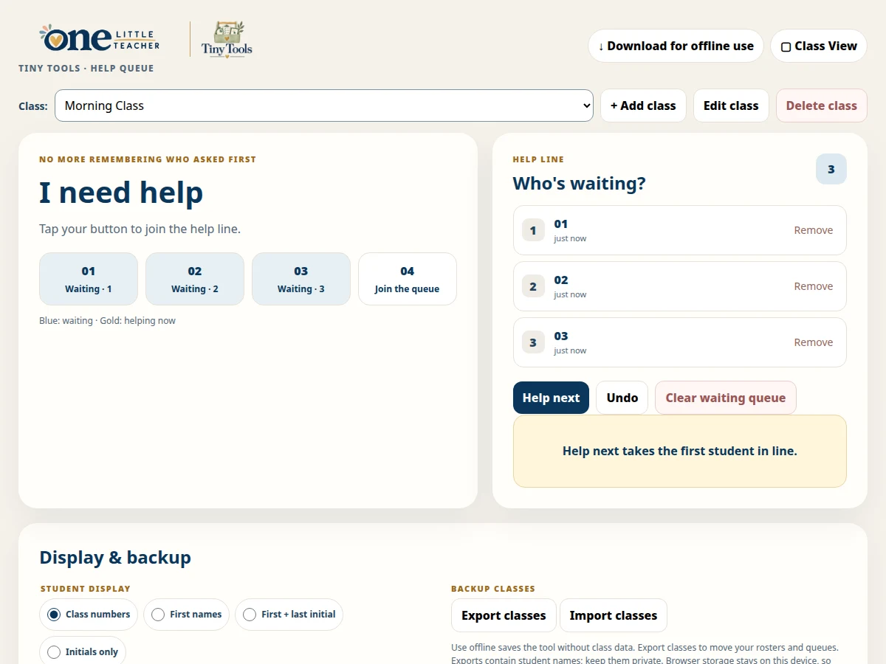

Management
Help Queue
Let students join a visible help line and help the next student in turn.
Free · Offline-friendly
Ways to use it
- Support classroom turn-taking and a visible help routine.
How to use it
- Set up a class using teacher controls.
- Choose a student display style and hide teacher controls.
- Students tap to join. Choose Help next, then Done when finished before helping the next student.
Practical details
Class-number and name display options are available. Class exports can contain student names; keep them private.
Explore together
Choose the setup that fits your lesson or classroom routine.